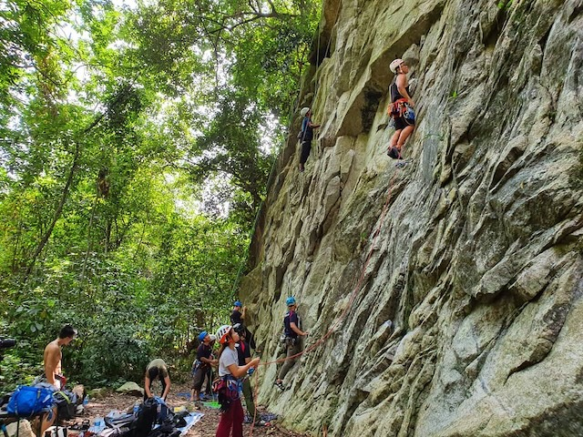
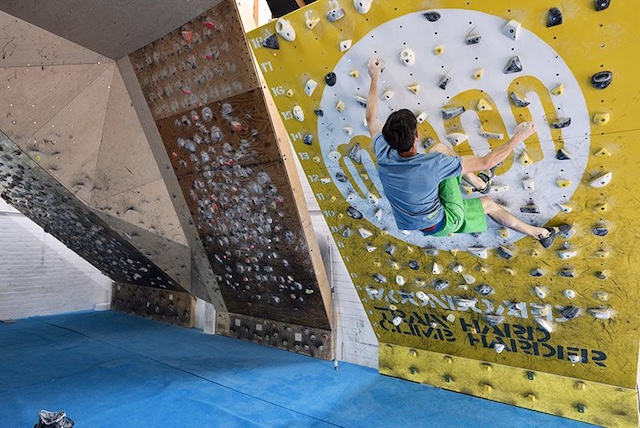

Home
About Me
My name is Lim. I'm a current student of Illinois Institute of Technology. I've been a web developer professionally for the last 20 years. I'm also passionate in making generative art using JavaScript. I'm currently living in Penang island, Malaysia (pictured below).
Climbing
I love climbing! I lead climb mainly outdoor at my home crag (pictured below).
For training or when the weather isn't great, I climb on the MoonBoard. MoonBoard is created by legendary climber Ben Moon. Here is a picture of MoonBoard and a video of him giving some useful tips and trips on how to MoonBoard.
